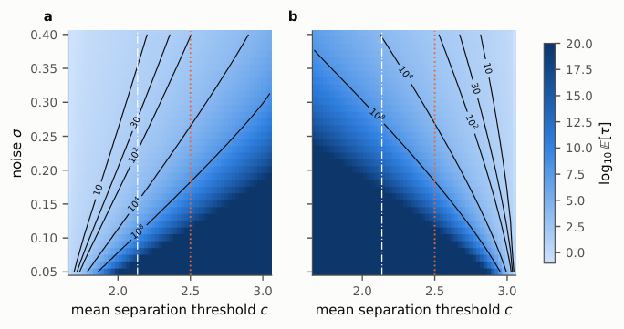

A self-contained Lean 4 file (no Mathlib) machine-checks the order-theoretic core: Knaster–Tarski, orbit bounds, watershed invariance and irreversibility, with an empty axiom report.
Abstract
Article 14 of the EU AI Act requires that a high-risk system be overseen by natural persons who understand its limits, remain alert to automation bias, and can disregard or override its output. That capability is invisible in the output and decays precisely when the system is good. A provider can certify it only by an outcome-contingent liability commitment, and how large a commitment courts will enforce is itself open. After Cavendish the enforceable multiple of actual loss is measured against the legitimate interest the clause protects; where that interest is preserved oversight capability, it exists only if the market separates, which requires a sufficiently permissive doctrine. We model the enforceable ceiling as a fixed point of an expectations map on a complete lattice. Existence follows from Knaster-Tarski. Because no case separates at compensation, compensation is always an equilibrium; once the doctrinal uplift clears a threshold set by the case population, a permissive equilibrium and a watershed appear, and the map inherits the provider's solvency cap, so an insurance withdrawal deep enough and long enough can destroy the permissive equilibrium, which returning cover does not restore. Perturbing the adjustment yields a closed-form long-run tipping point, exact recovery times, and the noise levels at which irreversibility fails. The welfare cost of the resulting trap is capped at the drafting cost of primary-obligation substitutes. The order-theoretic core is machine-checked in Lean 4 with an axiom-free report. Both AI-side parameters, shared-base-model intensity and provability, are matched to instruments available in 2026.
Problem
The enforceable penalty multiple under post-Cavendish doctrine depends on the legitimate interest protected. When that interest is preserved human oversight capability for AI under EU AI Act Article 14, the interest exists only if the market separates, and separation itself depends on the multiple. Treating the ceiling as an exogenous legal parameter is therefore inconsistent.
Approach
The enforceable ceiling is modelled as a fixed point of a monotone doctrine map D(m)=1+λ̄F(m) on a complete lattice. Existence follows from Knaster–Tarski, and the paper then analyses multiplicity, stability, folds and hysteresis. The map is extended with a solvency cap and a stochastic Freidlin–Wentzell perturbation to obtain tipping points and recovery times. The order-theoretic layer (17 theorems) is formalised in a dependency-free Lean 4 file using only Lean core; the analytic results are not formalised.
Results
Compensation is always an equilibrium. Above an uplift threshold, a permissive equilibrium and a watershed appear. A sufficiently deep and long insurance withdrawal can irreversibly destroy the permissive equilibrium. The analysis gives a closed-form long-run tipping point c*=1+λ̄/2, and the Lean proofs compile with no axioms reported.

Figure 6: Two clocks over the (c,\sigma) plane, both on a \log_{10} scale with contours at 10 , 30 , 10^{2} , 10^{4} and 10^{8} periods, across the fold interval. Panel (a): expected recovery time out of the compensation doctrine. Panel (b): expected exit time of the permissive doctrine; its ten- and thirty-period contours are the policy-horizon thresholds c^{\dagger}(\sigma,T) . The Maxwell point